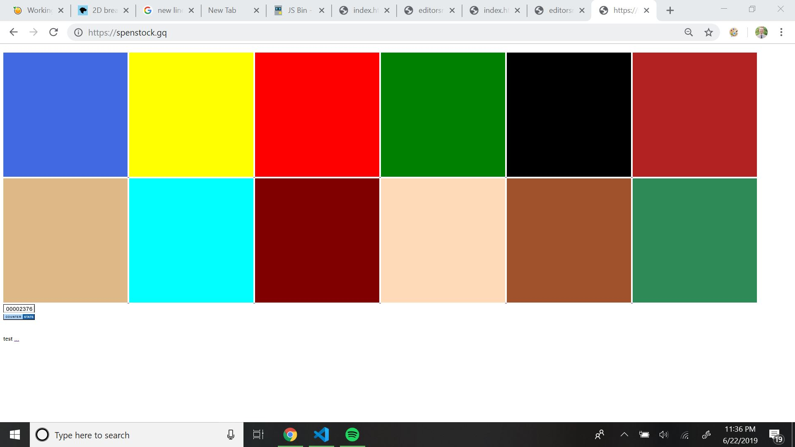

7/27/19
Motified card game color display, as when the cards were already matched, they would incorrectly display their colors.
Fixed up desert to make it more playable.
Fixed up jungle's bezier curve values for effective jumping.
-Spencer
7/13/19
Fixed some movement with Submarine to make it cleaner.
Also added stages to Haunted.
-Spencer
7/11/19
Snow and Haunted have been created, I actually made Snow after having difficulties with the rain in Haunted, as it ended up looking like snow.
Haunted includes some rain and the platforming from jungle.
My current plan is to make it into a Haunted House type game, but we'll see
Up to this point, I have been programing in a more process oriented view in comparison to a more effective object oriented programing style.
It has gone well, but to move forward, this new style is just much more effective.
I'll be learning this next to make these games better.
Progress also has been made with Card, it has been cleaned up (debuging tools removed & colors added to the cards).
Recently, I also finished 6.0001 for MIT online, it has helped me program definitely.
-Spencer
7/04/19
Card is up, and sicp is done.
I left all the debuging tools up for card, I'm sure you guys are going to enjoy that.
I honestly got lazy towards the end, I didn't make it as general as it needed to be, will work on that soon.
Happy July 4th everyone
-Spencer
7/01/19
Progress has been slow, looking at sicp for the time being.
Will add more jungle levels next, and the card game previously mentioned is going well!
-Spencer
6/26/19
Jungle was started two days ago and finished today.
It looks really good, the background makes the game look really good.
Most of the time I spent was on the gravity mechanic of the game. This took a while (probably 3 hours) of messing around with values and setting up the functions for effective gravity.
I should add more levels to jungle, but I think I will move on for now. I made the ability to add.
Submarine was also completed in its early stages, looking crisp I would say.
The next game I think will be "card" a card game, but I'm not sure and also promised myself to learn more before I start the next one.
-Spencer
6/23/19
Blog was created, looks good I would say.
Work was done today with the game to make the screen move when the box was near the edges in submarine game.
That looks good too.
Still need to work with colors...
-Spencer
6/22/19
So I decided to create editor's notes to talk about what's up
The current plan is to create an arcade on this website, using the square blocks premade

Probably spent 8 hours on the first game today, with probably 4.5 the day before that
and 6 before that. So we're at like 18.5 hours which has gone crazy fast.
Was up till 3 last night so I'm focused on this project.
Most of this time was spent on the movement of the submarine, and how it moved with the mouse
some works in progress were: before mouse and
before ship and basic detail
Currently, I don't like how it looks, as you can just explore the entire map by just clicking near the top and the bottom of the canvas.
There is just too much range. The next step will be keeping the submarine in the center of the screen, and just move the background.
I might get some hardware projects up here, stay tuned.
Thanks for reading
-Spencer